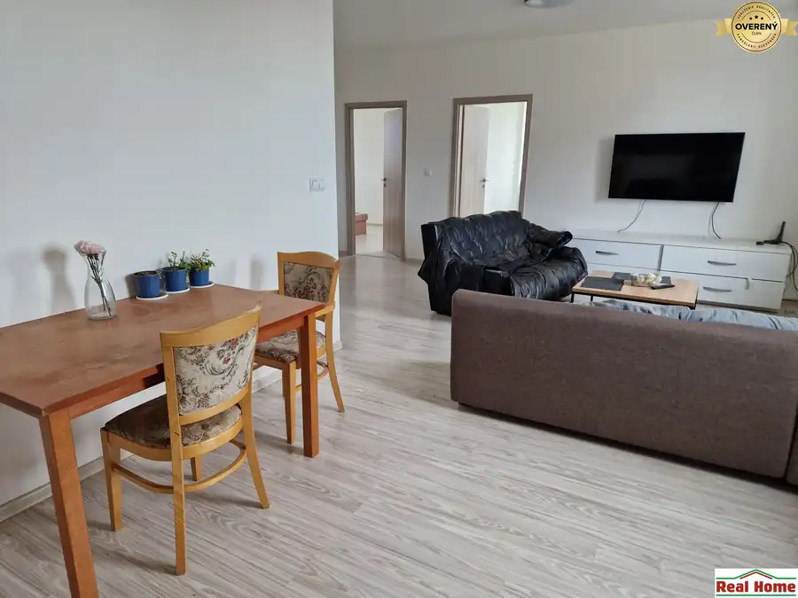
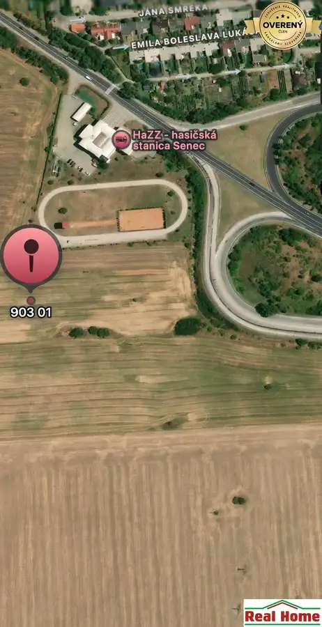

Na predaj: 4-izbový dom s pozemkom za cenu bytu.
Moravský Svätý Ján
- Dispozícia4-izbový
- Plocha106 m²
- Poschodie0.
- Stavpôvodný
O nehnuteľnosti
Nehnuteľnosť sa nachádza v Moravskom Svätom Jáne, v obci s vyše 2 100 obyvateľmi a s kompletnou občianskou vybavenosťou: pošta, základná škola, materská škôlka, potraviny, reštaurácia, zdravotné stredisko, lekáreň, vlaková stanica, atď... Obec má výbornú polohu, leží vo vzdialenosti iba cca 5 km od štátnej hranice s Rakúskom a približne 10 km od štátnej hranice s Českou republikou.
Moravský Svätý Ján je obec, ktorá ponúka okrem pokojného bývania aj veľa príležitostí na relax (cyklistika, rybolov, hubárčenie...).
Jedná sa o dvojpodlažný rodinný dom (zastavaná plocha: 106 m2), ktorý sa nachádza na ideálnom pozemku s výmerou 600 m2.
OPIS NEHNUTEĽNOSTI:
- Dom je priestranný a vzdušný; veľkosti jednotlivých izieb sú veľkorysé.
- Dom je podpivničený a pozostáva z dvoch nadzemných podlaží.
- V pivničných priestoroch sa nachádza: garáž, kotolňa a 2 miestnosti.
- Na prvom nadzemnom podlaží sa nachádza vstupná chodba (zádverie), chodba (hala), z ktorej sa vstupuje do WC so sprchovacím murovaným kútom, priestrannej kuchyne a obývacej izby, s výstupom na terasu. V obývacej izbe je možnosť na vybudovanie krbu.
- Na druhom nadzemnom podlaží sa nachádza chodba (hala), z ktorej sa vstupuje do troch izieb, šatníka a priestrannej kúpeľne s WC.
- Dom je v pôvodnom stave, napojený na inžinierske siete: kanalizácia, plyn, elektrika. Dom je postavený z pálenej tehly a z kvádra, strešná krytina je škridľa.
- Dom je obývateľný, avšak od roku výstavby (rok 2002) neboli v dome urobené žiadne rekonštrukcie.
- Vykurovanie: plynové, vykurovacie telesá - radiátory.
- Parkovanie: v garáži a pred domom je priestor na zaparkovanie 3 áut.
LOKALITA - VÝBORNÁ, jedna z najlepších v obci.
Ulica, v ktorej sa nehnuteľnosť nachádza vo výbornej lokalite, ulica je málo frekventovaná, nakoľko je to "slepá ulica". Táto štvrť obce je veľmi pokojná, susedia veľmi dobrí.
Neďaleko obce Moravský Sv. Ján sa nachádza štátna prírodná rezervácia Čeker – Čertova studňa, zriadená na ochranu prírodných spoločenstiev mŕtveho ramena rieky Moravy. Oblasť v okolí obce Moravský Sv. Ján je rajom pre milovníkov prírody, rybárstva a cyklistiky. V okolí rieky Moravy sú vybudované cyklotrasy až do bratislavského Devína, s napojením cyklotrasy do Rakúska. Z obce je veľmi dobré dopravné napojenie na Malacky a Kúty, v ktorých sa nachádzajú diaľničné zjazdy na Bratislavu a na Brno. Lokalita je výborná priamym napojením na Rakúsko - Hohenau - rakúska obec, vzdialená iba pár kilometrov od Moravského Svätého Jána.
Obec Moravský Sv. Ján sa nachádza v okrese Senica, v Trnavskom samosprávnom kraji a v Záhorskom regióne. Leží na trase, ktorá sa tiahne pozdĺž rieky Morava. Obec leží cca 5 km od štátnej hranice s Rakúskom a približne 10 km od štátnej hranice s Českou republikou. Obec Moravský Svätý Ján je miestom, kde história, kultúra a prírodné krásy spolu úzko súvisia a vytvárajú jedinečnú atmosféru, ktorá poteší každého, kto sa sem vydá.
Železničná stanica Moravský Svätý Ján je dôležitým dopravným uzlom pre obec a okolie.
Ponúkame na predaj dom s pozemkom vo výbornej lokalite za cenu bytu.
Cena: 165.000,-EUR.
Kontakt: Jaroslava Polčová .
Parametre
| Rozloha pozemku | 600 m² |
|---|---|
| Zastavaná plocha | 106 m² |
| Poschodie | prízemie |
| Počet izieb | 4 |
| Stav | pôvodný |
| El. napätie | 230V |
| Plyn | áno |
| Kanalizácia | áno |
| Kúpeľňa | vaňa a sprchovací kút |
| Vykurovanie | vlastné - plyn |
| Pivnica | áno |
| Garáž | áno |
| Parkovanie | áno |
| Inžinierske siete | áno |
| Postavené z | tehla |
| Zateplený objekt | nie |
| Okná | drevené |
| Dátum zverejnenia | 26. 8. 2026 |
Kde to je
Mohlo by Vás zaujímať

Byt10 Cena dohodouPRENÁJOM - 3izbový byt s parkovaním na Šamorínskej ulici v Senci Senec 3-izbový62 m² Ponúkame na prenájom 3-izbový byt na Šamorínskej ulici v Senci. Byt má výmeru 62 m2; pozostáva z: veľkej obývacej miestnosti prepojenej s kuchynskou…
Developerské projekty2 4 288 200 €NA PREDAJ: Pozemok s výmerou 35 735 m2 Senec 35735 m² Ponúkame na predaj pozemok s výmerou 35 735 m2 v katastrálnom území Senec. Pozemok je súčasťou nového územného plánu (územný plán schválený Mestským…